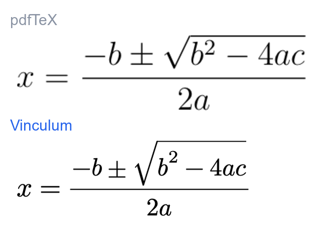
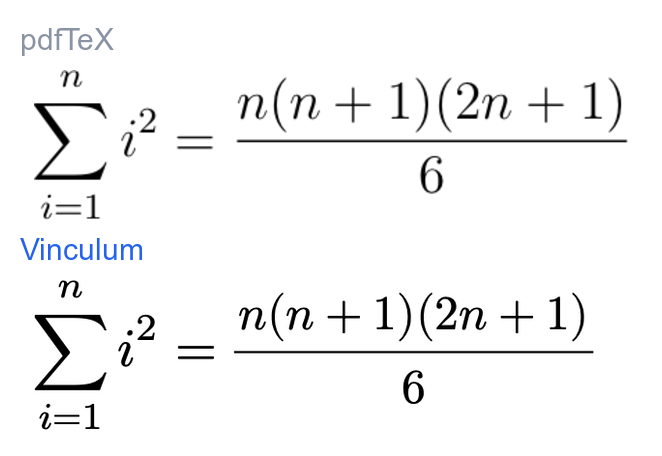
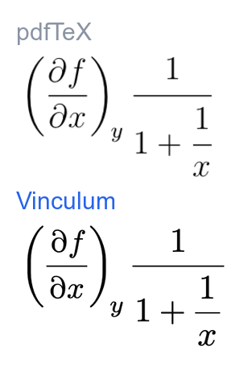

Native LaTeX math typesetting.
Real glyph shapes and TeX metrics read straight from the font’s OpenType MATH table — following Knuth’s Appendix G. No MathJax, no KaTeX, no WebView, and no third-party Swift dependencies.
A Swift package for Apple & Linux — and, through one portable display-list seam, native rendering on Windows (WPF & WinUI, from NuGet), Android, and WebAssembly. Not shipping Swift? Render to self-contained SVG or PNG too.

Runs where you do
The layout engine is platform-free, so the same typesetting drives every target.
Apple platforms
macOS · iOS · visionOS · tvOS. Draws with OS-provided CoreText/CoreGraphics — nothing else linked — into a baseline-aligned NSTextAttachment, SwiftUI MathView, or VinculumLabel.
Linux & server-side
Native PNGs via Silica/Cairo + FreeType, behind the opt-in LinuxRaster trait — or self-contained SVG, which needs neither. Default builds stay dependency-free. LINUX.md ↗
Windows & .NET
Native rendering through the C ABI + FreeType, drawn with SkiaSharp. A drop-in VinculumMathView control for both WPF and WinUI 3, shipped as self-contained NuGet packages. windows/README ↗
Android
The C ABI as a JNI library with a Kotlin VDL1 decoder and Canvas renderer — same Skia as the Windows path, so output matches. On-device rendering proven. ANDROID.md ↗
WebAssembly
The platform-free layout core cross-compiles to wasm32-unknown-wasip1 and renders SVG — a ~9.5 MB module on FoundationEssentials (no ICU), run under wasmtime in CI.
One portable seam
Windows, Android, and WebAssembly all reuse it: a fully-resolved scene crosses the C ABI as the language-neutral VDL1 binary, decoded by Swift, Kotlin, and C# — wire agreement CI-gated. DISPLAYLIST.md ↗
The font is the authority
Everything TeX reads from a math font, Vinculum reads from the font — parsed at runtime, used in layout, tested against the raw table bytes.
Full MATH table
All 56 MathConstants, per-glyph italic corrections and accent attachment, cut-in kerning, the display/text/script/scriptscript style lattice.
Optical scripts (ssty)
Superscripts and deep indices use the font’s purpose-redrawn heavier variants, so shrunk glyphs keep the base text’s weight instead of thinning out.
Variants & assembly
Tall fences and radicals step through size-variant ladders, then glyph assembly from end caps and extenders — constant stroke weight, like TeX.
Five bundled fonts
Latin Modern, TeX Gyre Termes & Pagella, STIX Two, and the sans Fira Math — or bring any OpenType MATH font with MathFont(url:).
Spoken math
Every equation carries a ClearSpeak-style description, so VoiceOver reads the mathematics aloud instead of announcing “image”.
Round-trip & hit-testing
MathNode.toLaTeX(), source-ranged parse diagnostics, and an opt-in hit-test substrate mapping points back to the subtree that drew them.
The same equation, two engines
The claim is TeX-grade output — so here it is beside real pdfTeX.
The identical LaTeX through both: Vinculum in Latin Modern, pdfTeX in
Computer Modern (the same lineage). Judge the fidelity yourself.



Same LaTeX through both engines, regenerated by scripts/compare-tex.sh — nothing retouched.
Show, don’t tell
Every image below is regenerated from the live engine on each push — always current, never hand-made.


Fast, and we measured it
No WebView, no JavaScript engine — a cold render is a parse, a dozen CoreText calls, and a draw. We profiled it phase by phase; the full breakdown and methodology are in the report.
~0.5 µs warm
A previously-seen equation is an NSCache hit keyed by content, theme, size, and font — re-rendering costs essentially nothing.
~0.2 ms cold
First sight of an equation: parse → layout → scene. The first on-screen paint adds ~0.23 ms, then the OS caches the bitmap.
~8 µs headless
Pure-Swift layout with no CoreText and no raster — the Linux and SVG geometry path.
~77% is CoreText
Measuring and drawing glyphs — the work any native renderer does. Vinculum's own parse + geometry is under a fifth of the cold path.
Release medians on Apple silicon. Full phase-by-phase breakdown, the deferred-rasterization finding, and debug-vs-release in PERFORMANCE.md ↗.
Built for LLM output
Models emit prose with math mixed in — and, mid-stream, sometimes half-finished LaTeX. Vinculum takes the whole string and does the right thing.
All four delimiters
One call renders a whole response — inline $…$ and \(…\), display $$…$$ and \[…\] — as native typeset math set inline with the prose.
Never a broken render
Malformed or half-streamed LaTeX a model hallucinates degrades to its visible source — a labeled fallback, never a mangled glyph and never a crash.
Spoken, not “image”
Every rendered equation carries a ClearSpeak-style description, so assistive tech reads the math aloud instead of announcing “image”.
Get started
Add the package, then render — one call turns a whole document, or a single equation, into native output.
Package.swift
// Apple platforms, and Linux layout — a Silica-free graph by default .package(url: "https://github.com/2389-research/Vinculum.git", from: "1.5.0")
Render a whole document (prose with embedded math)
import VinculumRender
textView.textStorage?.setAttributedString(
MathText.attributedString(from: modelResponse)) // $…$, $$…$$, \(…\), \[…\]
Or one equation as a baseline-aligned attachment
let run = MathImageRenderer.attachmentString(
latex: #"x = \frac{-b \pm \sqrt{b^2 - 4ac}}{2a}"#,
display: true, mathTheme: .light, baseSize: 15)
Unsupported input degrades to visible source — never a broken half-render. See INTEGRATION.md for views, SVG, threading, and caching.
Documentation
The reference set — each doc illustrated with CI-regenerated figures.
Why “Vinculum”?
A vinculum is the bar itself — the line over a fraction, a root, or a repeating decimal. The one mark every math renderer has to get right, and the thing this library is named for. The ⁄ in the wordmark is that bar.